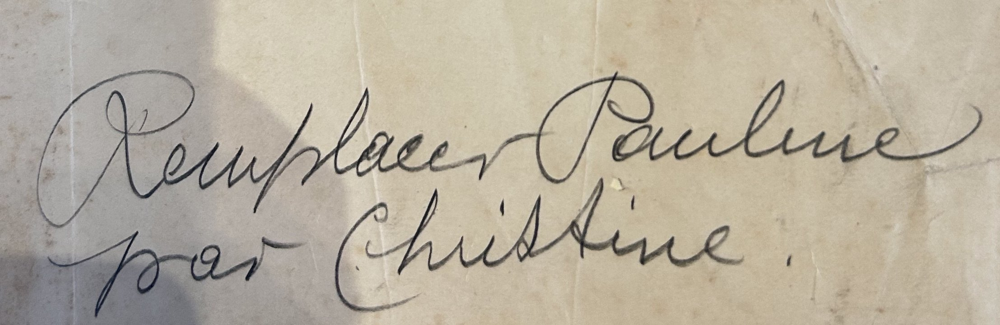
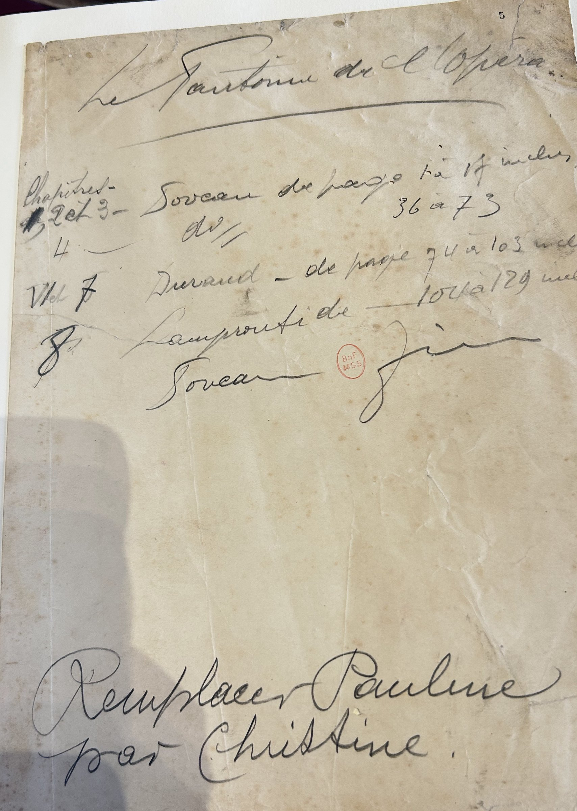
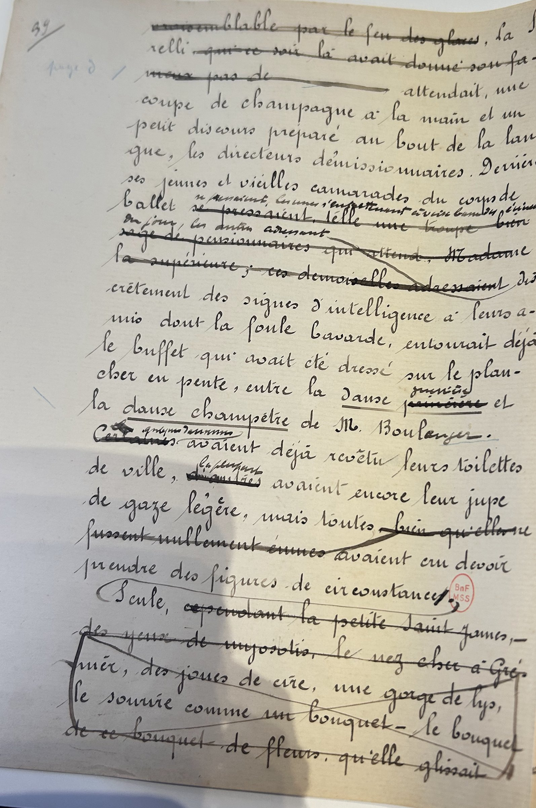
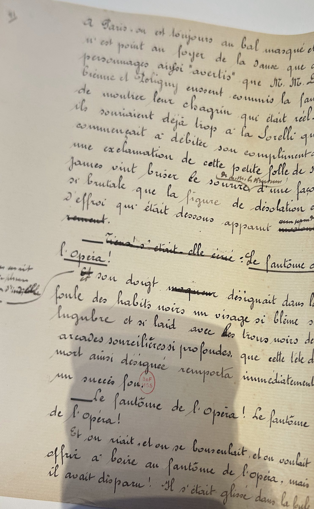

Fantóm opery
Napísaný v Nice, vo Villa Les Cascades na Mont Borone. Na pokračovanie v denníku Le Gaulois od septembra 1909 do januára 1910, knižne u Pierra Lafitta v roku 1910.
Rukopis
V rukopise sa Christine pôvodne volala Pauline. Autor si na pracovný list poznačil: „Remplacer Pauline par Christine.“ – Nahradiť Pauline Christine.







Odkiaľ prišiel príbeh
Podľa rodiny príbeh vyrástol z jeho novinárskej a reportérskej práce, ako mnohé jeho romány, a z viacerých skutočných udalostí:
- Požiar opery Le Peletier 28. októbra 1873. Povesť hovorí, že oheň si vzal baletku a jej snúbenec Ernest, klavirista, bol znetvorený. Mal sa ukryť pri podzemnom jazere Opéra Garnier.
- Pád lustra v Opéra Garnier v roku 1896, ktorý zabil divákku.
- Rok 1907: robotníci v podzemí Opéra Garnier našli ľudské pozostatky, keď ukladali urny s gramofónovými platňami.
V tom čase bol Gaston Leroux uprostred rozvodu svojho prvého manželstva. Rozvod sa podľa rodiny ťahal pätnásť rokov.
Ďalšie listy rukopisu







Le Gaulois


Vydanie z roku 1938 vyšlo u Raymonda Schalla na rue Caulaincourt, pod kopcom Montmartre.
Adaptácie
Rodina uchováva množstvo adaptácií Fantóma opery: animované filmy (5 DVD), komiksy, prepisy, filmy a seriály.
Ce n’est pas un masque. C’est une voix.
- Famille Gaston Leroux: odpovede na dotazník LEROUX100, november 2026
- BnF, Département des Manuscrits: rukopis Le Fantôme de l’Opéra (fotografie z rodinných podkladov)